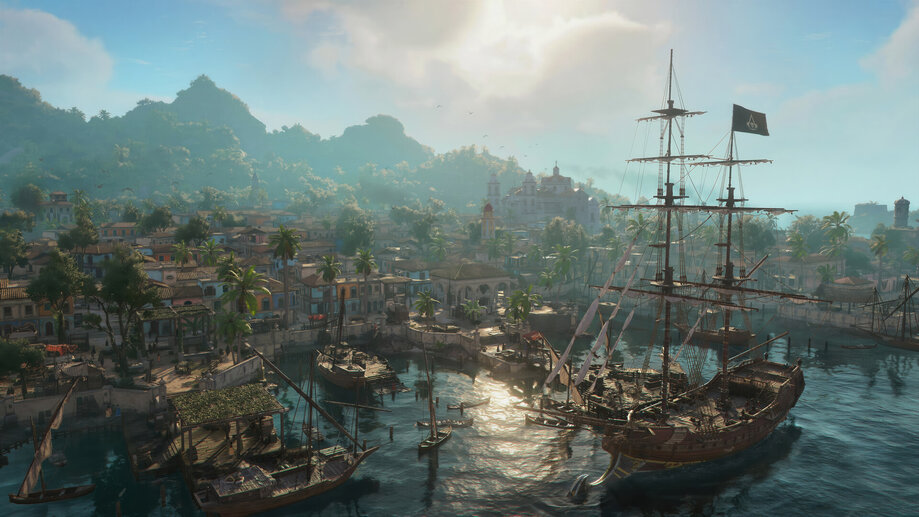

Assassin's Creed IV: Black Flag é um jogo de ação e aventura desenvolvido pela Ubisoft Montreal e lançado em 2013. A história se passa durante a Era de Ouro da Pirataria, no início do século XVIII, e acompanha Edward Kenway, um jovem e ambicioso pirata que acaba se envolvendo na antiga disputa entre Assassinos e Templários. Ao longo de sua jornada, Edward passa por diversas ilhas e cidades do Caribe, encontrando piratas famosos, membros das duas ordens e diferentes personagens que influenciam sua trajetória.
O jogo apresenta um enorme mundo aberto formado por mares, ilhas, cidades, florestas e pequenas comunidades, permitindo que o jogador explore o Caribe praticamente de forma livre. A aventura combina elementos históricos com a ficção característica da franquia Assassin's Creed, apresentando acontecimentos e personagens inspirados no período da pirataria.
Um dos grandes destaques de Black Flag é a maneira como a pirataria foi integrada à fórmula da série. Em vez de ser apenas um assassino explorando cidades, o jogador também assume o comando de um navio e passa grande parte da aventura navegando pelo Caribe. Essa combinação fez com que o jogo se diferenciasse bastante dos títulos anteriores da franquia.
Jogabilidade
A jogabilidade de Black Flag combina combate, furtividade, exploração, parkour e navegação. Edward possui diferentes armas, como espadas, pistolas e lâminas ocultas, permitindo enfrentar inimigos diretamente ou eliminá-los silenciosamente. O sistema de combate mantém a base dos jogos anteriores, com ataques, contra-ataques e esquivas, enquanto a furtividade permite que o jogador utilize o ambiente para evitar confrontos.
A navegação é um dos principais elementos do jogo. Edward pode controlar o Jackdaw, seu navio, e navegar livremente pelo Caribe. Durante a exploração, é possível encontrar outros navios, incluindo embarcações mercantes, militares e piratas. O jogador pode atacar essas embarcações para obter dinheiro e recursos ou simplesmente continuar sua viagem.
O Jackdaw também pode ser aprimorado durante a aventura. Recursos obtidos através da exploração e dos combates podem ser utilizados para melhorar o casco, os canhões, os morteiros, o armazenamento e outros componentes do navio. Dessa forma, a evolução da embarcação se torna importante para enfrentar navios cada vez mais poderosos.
Além das batalhas navais, o jogador pode explorar ilhas e cidades, procurar tesouros, encontrar colecionáveis, caçar animais e realizar diferentes atividades secundárias. Edward também pode utilizar o ambiente para realizar parkour, subir em construções, árvores e torres e utilizar pontos de sincronização para revelar partes do mapa.
Essa mistura entre vida de pirata, exploração marítima e características tradicionais de Assassin's Creed é um dos principais motivos pelos quais Black Flag possui uma identidade tão diferente dentro da franquia.
Caracteristicas ⬇
🏴☠️ Era de Ouro da Pirataria: O jogo se passa no Caribe durante a Era de Ouro da Pirataria, permitindo explorar um período marcado por piratas, grandes navegações e disputas pelo controle das rotas marítimas.
⛵ Navegação e batalhas navais: O jogador pode comandar o Jackdaw, navegar livremente pelo Caribe e participar de batalhas contra diferentes tipos de embarcações.
🌊 Mundo aberto: O mapa oferece um grande espaço para exploração, com ilhas, cidades, florestas, plantações, naufrágios e áreas marítimas para descobrir.
🗡️ Assassinato e furtividade: Edward utiliza as tradicionais habilidades dos Assassinos, podendo se esconder, utilizar a lâmina oculta, realizar ataques furtivos e aproveitar o ambiente para surpreender seus inimigos.
💰 Pirataria e exploração: Tesouros, recursos, navios e atividades secundárias permitem ao jogador explorar o mundo enquanto acumula dinheiro e materiais para melhorar seus equipamentos.
🦜 Vida de pirata: Além das missões principais, o jogo oferece atividades como caça, pesca, exploração de naufrágios e descoberta de locais escondidos, reforçando a sensação de viver como um pirata no Caribe.
Personagens
Edward Kenway
Edward Kenway é o protagonista do jogo e um jovem galês que busca riqueza e fama como pirata. Após assumir a identidade de um Assassino, ele acaba envolvido no conflito entre Assassinos e Templários. Ao longo da história, Edward passa por uma grande transformação, deixando de ser movido apenas por interesses pessoais e começando a compreender o verdadeiro significado de suas escolhas e das pessoas ao seu redor.
Barba Negra
Edward Teach, conhecido como Barba Negra, é um dos piratas mais famosos apresentados no jogo. Ele é um capitão experiente, respeitado e temido pelos outros piratas. Apesar de sua reputação, Barba Negra demonstra preocupação com o futuro da pirataria e acaba desenvolvendo uma relação de amizade e respeito com Edward.
Adewale
Adewale é um ex-escravizado que se torna um importante aliado de Edward e membro da tripulação do Jackdaw. Experiente, habilidoso e determinado, ele possui uma forte personalidade e um grande senso de justiça. Sua relação com Edward evolui ao longo da história, tornando-se uma das amizades mais importantes da aventura.
Anne Bonny
Anne Bonny é uma das figuras mais marcantes da tripulação de Edward. Conhecida por sua personalidade independente e seu passado como pirata, ela se envolve com a tripulação durante os acontecimentos da história. Anne demonstra coragem e determinação e possui um papel importante nos momentos finais da jornada de Edward.
Mapas

Nassau
Refúgio dos piratas e um dos locais mais importantes da história. A cidade representa o ideal de uma república pirata independente no Caribe.
Kingston
Uma importante cidade portuária cercada por áreas naturais, plantações e locais de exploração.
Havana
Uma das principais cidades do jogo, marcada pela arquitetura colonial espanhola, ruas movimentadas e diversas atividades para Edward explorar.
Mar
Navegue por um enorme oceano aberto, enfrente navios inimigos, descubra ilhas e encontre tesouros escondidos.
⚔️ O Legado ⚔️
Assassin's Creed IV: Black Flag é considerado um dos títulos mais marcantes da franquia, principalmente por sua ambientação pirata e pela exploração naval. O jogo se destacou por transformar a navegação e os combates entre navios em uma das principais atrações da série. Sua liberdade de exploração, trilha sonora, mundo aberto e história fizeram com que Black Flag permanecesse como um dos capítulos mais lembrados de Assassin's Creed.